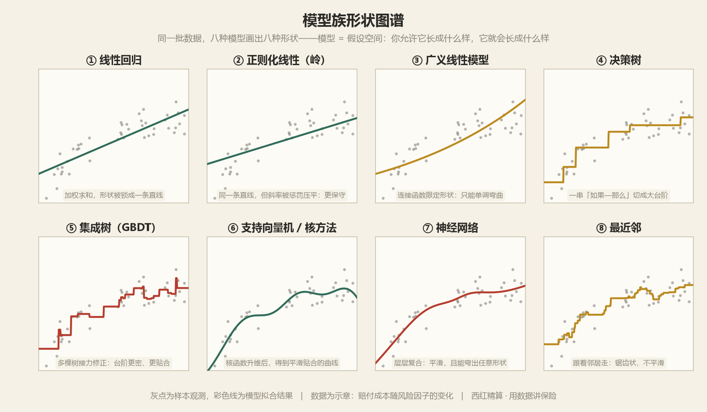
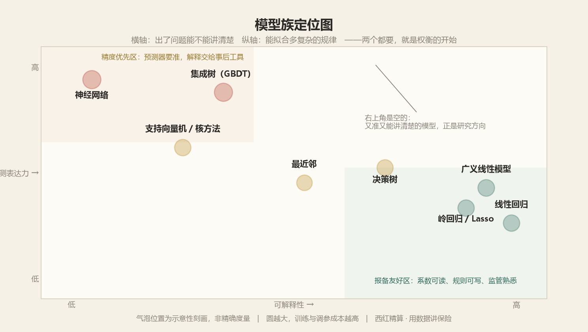

|
一、开场：所有机器学习，都在做同一件事
先建立一个足够简单的心智模型，后面所有名词都挂得上去。
先说结论：机器学习就是从数据里找一个函数。给一批已知的输入和结果，让机器自己凑出一个规则，下次来一个新输入，能给出一个像样的输出。
换成保险的例子：一位车主来投保，我们知道他的年龄、驾龄、车型、车龄、所在城市、去年是否出险——这些堆在一起叫 x；我们想知道他明年的预期赔付成本——这个叫 y。所谓建模，就是找一个 f，使得 y ≈ f(x)。
| 图 1 · 机器学习的最小骨架：找一个函数 |
输入 x
年龄 32 · 驾龄 8
车型 A · 城市 B
去年出险 0 次
|
→ |
函数 f
我们要找的东西
由「模型+策略+算法」
共同决定
|
→ |
输出 ŷ
预期赔付成本
1,860 元
|
|
真正的难题从来不是「要不要找」，而是下面这三个问题。
| 三要素 |
通俗地问 |
书面上问 |
| 模型 |
我允许它长成什么样？ |
假设空间是什么？待定参数有哪些？ |
| 策略 |
凭什么说这个比那个好？ |
损失函数怎么定？最小化经验风险还是结构风险？ |
| 算法 |
这么多可能，怎么把它搜出来？ |
闭式解、梯度下降、贪心搜索还是启发式？ |
这三句话是本文的全部提纲。接下来逐一拆开，每一步都配图。
二、模型：你在多大的范围里找
模型不是一个具体函数，是一族函数的集合——先划范围，再谈挑选。
最简单的猜测：赔付成本随驾龄线性下降。写成 ŷ = w₀ + w₁·驾龄。这里 w₀、w₁ 是待定的数，机器要做的就是试出最好的 w₀、w₁。
把变量加到 20 个，就变成 ŷ = w₀ + w₁x₁ + w₂x₂ + … + w₂₀x₂₀；把变量先做分箱再组合，就变成一张评分卡；再放开，让规则自己长出分叉，就成了决策树；把几百棵树叠起来，就是梯度提升树。
关键认知：模型 = 假设空间。你选的不是一条曲线，是一片「所有可能曲线」的空间。选线性回归，等于宣布「我只信直线」；选深度神经网络，等于宣布「任意复杂的形状我都能接受」。范围越大，越可能装下真相，也越容易被数据里的噪声带跑。
| 图 2 · 假设空间的三档宽度（每一列中被涂色的那一格，就是模型在该处的取值） |
| 窄：只许画直线 |
中：可以画折线 |
宽：任意曲线 |
|
|
|
形状被锁死
学不会 → 欠拟合 |
能拐弯，大致贴合
合适 |
连噪声一起绕过
过拟合 |
|
三档不是「越宽越好」，而是「够用就好」——这就是下一章要解决的取舍。
下面这张图，是八个模型族在同一批数据上各自拟合的结果——每条线都是真实算出来的，不是示意图。看的时候注意：灰点是样本，彩线是模型允许自己长成的形状。
|

|
| 图 2A · 模型族形状图谱：八种模型，八种被允许的形状 |
①②③ 只能画线和单调曲线；④⑤ 用台阶逼近；⑥⑦ 平滑贴合；⑧ 干脆跟着邻居走。形状差异，就是假设空间的差异。
再看它们在「能不能讲清楚」和「能拟合多复杂」这张地图上的位置——右上角是空的，这两个都想要的冲动，就是所有权衡的开始。
|

|
| 图 2B · 模型族定位图：可解释性与预测表达力的权衡 |
左上「精度优先区」交给预测器，右下「报备友好区」留给要写进条款的模型——多数业务最终落在中间。
然后是常用模型族的一张速查表，把八种模型各自「假设世界长什么样」写全——那是模型的本质。
| 模型族 |
它假设世界长什么样 |
可解释性 |
保险里通常干什么 |
| 线性回归 |
效果是各因素的加权求和 |
★★★★★ 系数即答案 |
基准模型、趋势外推 |
| 广义线性模型 |
加权和经过一个连接函数影响均值 |
★★★★★ 可直接报备 |
车险定价主力（泊松 / Gamma / Tweedie） |
| 正则化线性 |
同上，但多数系数应该接近 0 |
★★★★☆ |
变量筛选、小样本定价 |
| 决策树 |
世界由一串「如果…那么…」切成方块 |
★★★★☆ 可画图 |
规则挖掘、客户分层 |
| 集成树（随机森林 / GBDT） |
多个弱规则的投票或接力修正 |
★★☆☆☆ 需事后解释 |
精算预测精度天花板 |
| 支持向量机 / 核方法 |
升维之后可以用一个平面分开 |
★★☆☆☆ |
小样本分类、异常检测 |
| 神经网络 |
任何复杂映射都能被层层复合逼近 |
★☆☆☆☆ 黑箱 |
图像定损、文本抽取、大模型 |
| 最近邻 |
相似的输入会有相似的输出 |
★★★☆☆ 可举例子 |
个案比价、冷启动兜底 |
|
说人话：选模型就像给装修队划定施工范围——只允许贴瓷砖，最差也就是贴得难看；允许「随便发挥」，可能惊艳，也可能把承重墙砸了。划定范围这一步，比后面所有调参都重要。
|
三、策略：凭什么说这个比那个好
策略就是一把尺子。尺子怎么定，直接决定模型最后长什么样。
有了候选范围，接下来要给「好」下定义。分两层：损失函数衡量单个样本错得多离谱，风险则是把所有样本的损失平均起来。所谓学习，就是在所有候选里找风险最小的那个。
| 图 3 · 从「一个样本错多少」到「整体有多差」 |
① 损失函数
第 i 个客户：
预测 1,860，实际 2,400
差 540
|
→ |
② 遍历全部样本
38 万条保单
逐条算损失 → 求平均
|
→ |
③ 风险
整体有多差
0.213
|
|
学习的目标，就是让第③格里那个数尽可能小。
损失函数不是唯一的。用哪种，取决于你认为「什么错更不可原谅」——这一点精算师其实比程序员更敏感。
| 损失函数 |
怎么算错 |
性格 |
用在哪 |
| 平方损失 |
差值的平方 |
对大偏差非常敏感 |
回归、最小二乘 |
| 绝对损失 |
差值的绝对值 |
不怕极端值 |
大额赔款、稳健估计 |
| 对数损失 / 交叉熵 |
对「把话说反」重罚 |
偏爱概率校准 |
分类、欺诈识别 |
| 0—1 损失 |
错就是 1，对就是 0 |
最贴近业务，但不好优化 |
错误率（常只做评估） |
| 代价敏感损失 |
漏判和误判罚得不一样 |
把业务金额写进目标 |
反欺诈（漏掉一笔很贵） |
| Tweedie 损失 |
允许大量零赔款 + 长尾大额 |
为保险赔付分布定制 |
纯保费建模 |
有了尺子，就可以宣布第一条学习准则：经验风险最小化——在训练数据上把平均损失压到最低。听起来天经地义，问题在于：训练数据上的最低，不等于新数据上的最低。
| 图 4 · 模型越来越复杂时，两条误差曲线怎么走 |
| 误差高低 |
很简 |
简 |
适中 |
繁 |
很繁 |
极繁 |
| 训练误差 |
|
|
|
|
|
|
| 新数据误差 |
|
|
|
|
|
|
|
学不会
欠拟合 |
最优点 |
背住了噪声
过拟合 |
|
图 4 右侧那个越拉越大的口子，就是全部麻烦的来源。于是有了第二条准则：结构风险最小化——在「拟合得好」之外，再加一条「别太复杂」的罚款。
结构风险 ＝ 经验风险 ＋ λ × 复杂度惩罚
前项要「拟合得准」，后项要「别太拧巴」，λ 决定你更在意哪个
|
这里有个精算师会心一笑的地方：λ 干的活，和信度公式里的 K 是同一个活。λ 越大，系数越被推向 0，模型越接近「什么都不信、只看整体均值」；λ 越小，越相信手上的个体数据。信度因子 Z = n/(n+K) 说的是同一件事——数据越多，越该信个体；数据越少，越该信先验。
| 图 5 · 误差从哪来：偏差-方差窘境（靶心为真相，● 为每次建模的结果） |
| 偏差大 · 方差小 |
● ●
● ●
（◎ 靶心在别处） |
每次都打同一个地方，
但那个地方不是靶心 |
|
| 偏差小 · 方差大 |
● ●
◎
● ● |
平均看围着靶心，
但每一次都不靠谱 |
|
|
|
| 最糟状态 |
● ●
● ●
（◎ 在角落） |
| 既不准也不稳 |
|
|
窘境在于：这两个误差此消彼长。模型放宽，偏差降、方差升；模型收紧，方差降、偏差升。中间有一个总和最低的点，那就是图 4 里标「最优点」的位置。正则化、集成、早停、交叉验证，本质上都是在找这个点。
|
说人话：策略这把尺子如果只量「训练集上多准」，模型就会把答案连同印刷瑕疵一起背下来。好的策略必须包含一句「不许你背太细」——信度理论管这叫向手册费率收缩，机器学习管这叫正则化。
|
四、算法：怎么把它找出来
范围划好了、尺子定好了，最后一步是搜索。多数算法之所以存在，是因为搜索太贵。
搜索分两条路。第一条是闭式解：数学上能直接写出答案，一步到位。线性回归就属于这一类——把导数令为零，解一个方程组，w 就出来了。快，但只对最简单的模型有效。
第二条路是迭代搜索：先随便猜一个，然后一点点往好的方向挪，挪到差不多为止。绝大多数现代算法走这条路，因为模型一复杂，方程就没有解析解了。
| 图 6 · 梯度下降：每一步都往更低处挪（金色是走过的路，绿色是谷底） |
|
每一步只做三件事：
① 用脚感受哪边更低
（算梯度）
② 朝那个方向迈一步
（更新参数）
③ 迈多大？由学习率定
重复几百到几百万次，直到脚下不再变低。所谓「训练」，就是这一件事。
|
|
| 图 7 · 学习率（步长）的三种命运 |
| 太小 |
| ● ● ● ● ● ● |
挪了一万步
还没到山脚 |
|
|
| 太大 |
● ●
● ●
● |
在谷底两侧
来回震荡甚至飞出去 |
|
|
除了梯度下降这一族，还有几类思路完全不同的搜索法：决策树用贪心分裂（每一步只挑当下最划算的那个切法，不回头）；EM 算法用交替求期望与最大化处理有缺失的信息；贝叶斯方法干脆不找「一个最优值」，而是给出「参数的整个分布」。
下面这张表是全篇最该记住的一张——它把三要素重新缝回一个个具体的算法上。以后遇到任何新名字，照着这三列去拆。
| 算法 |
模型（在哪找） |
策略（什么叫好） |
算法（怎么找） |
| 线性回归 |
线性函数族 |
平方损失最小 |
正规方程（闭式解） |
| 岭回归 / Lasso |
线性函数族 |
平方损失 + L2 / L1 惩罚 |
闭式解 / 坐标下降 |
| 逻辑回归 |
线性 + S 形压缩 |
对数损失最小 |
梯度下降 / 牛顿法 |
| GLM（泊松 / Tweedie） |
线性 + 连接函数 |
对应指数的对数似然 |
迭代加权最小二乘 |
| 决策树 |
所有可能的「如果—那么」切法 |
纯度最高（信息增益 / 基尼） |
贪心递归分裂 |
| 随机森林 |
多棵树的投票 |
各自纯度 + 降低相关性 |
自助抽样 + 随机选特征 |
| GBDT / XGBoost |
树的可加集成 |
任意可微损失 + 正则项 |
前向分步 + 二阶近似 |
| 支持向量机 |
核空间里的超平面 |
间隔最大 + 铰链损失 |
凸优化（SMO） |
| 神经网络 |
多层复合非线性函数 |
交叉熵 / 均方 + 正则 |
反向传播 + 自适应优化器 |
|
说人话：同一个模型换个策略就是新算法——线性回归把平方损失换成「分错就罚」，就成了 SVM 的亲戚；同一策略换个搜索方式也是新算法——梯度下降换成贪心分裂，就从逻辑回归走到了决策树。所谓算法创新，八成是这三格里的某一格被换了。
|
五、三要素怎么咬在一起
一张图看完：谁先谁后、谁约束谁。
| 图 8 · 三要素的咬合关系（自上而下是执行顺序，自下而上是约束关系） |
① 模型
划定候选范围
假设空间有多大
|
↓ |
② 策略
定一把尺子
风险 = 损失 + 惩罚
|
↓ |
③ 算法
在范围里搜
梯度 / 贪心 / 闭式
|
| ↑ 反过来：算法搜不动，说明模型太宽；怎么调都过拟合，说明策略太松 |
|
放到一次完整的建模流程里看，三要素各在哪一步起作用：
| 步骤 |
在做什么 |
哪一要素在主导 |
| ① 定问题 |
预测什么、用什么衡量成败 |
策略——先选对目标，其余都是白费 |
| ② 备数据 |
清洗、切分、做特征 |
三要素之外，但决定上限 |
| ③ 选模型 |
线性、树、还是网络 |
模型——划范围 |
| ④ 定目标 |
选损失、加正则、定代价权重 |
策略——定尺子 |
| ⑤ 训练 |
跑优化、调学习率、早停 |
算法——动手搜 |
| ⑥ 验证 |
留出集 / 交叉验证 / 时间外样本 |
回头检验策略有没有定歪 |
| ⑦ 上线与监控 |
看稳定性、看漂移、留对照组 |
检验模型是否还适配当下 |
到这里，「机器学习」这四个字已经被拆完了。下面四章要做的，是把这套骨架往上放大：把模型这一格换成更有表达力的结构，就走到深度学习；把策略这一格换成「延迟到来的奖励」，就走到强化学习；把两者合起来、再加上规模，就是今天说的人工智能。
六、从机器学习到深度学习：把「模型」这一格放大
深度学习不是另一个学科，它只是把假设空间换成了「层层复合的函数」。
传统机器学习有个绕不开的瓶颈：特征要人来做。「驾龄超过 10 年且近三年无出险」这种交叉，得靠人想出来、手工造出来。变量一多、交互一复杂，人力就跟不上了。
深度学习的答案是：让模型自己学特征。前面几层负责把原始输入变成有用的中间表示，最后一层才做预测——这叫表示学习。放到三要素框架里看，变化的其实只有「模型」这一格：从「线性/树」换成了「多层复合函数」。
| 图 9 · 一个神经元在做两件事：加权求和，然后过一个非线性开关 |
输入
年龄 · 驾龄
车型 · 地区
|
→ |
① 加权求和
z = Σ(wᵢxᵢ) + b
每个输入给个权重
|
→ |
② 激活函数
a = σ(z)
把它压成非线性的
|
→ |
输出
传给下一层
|
|
② 那一步不能省。去掉它，一百层网络等价于一层——因为线性变换复合起来还是线性。
| 图 10 · 把神经元排成层，就是深度网络（● 为一个神经元） |
|
|
同样的「层」换个连接方式，就长出了三种性格完全不同的架构。这也是深度学习这十年最主要的战场。
| 架构 |
核心机制 |
擅长什么数据 |
保险里的落点 |
| 全连接网络 |
每个神经元连到上一层全部 |
表格数据 |
结构化预测（但常被树模型打败） |
| 卷积神经网络 |
局部连接 + 权重共享（同一个特征到处扫） |
图像、有空间结构的东西 |
车险图片定损、医疗影像 |
| 循环网络 / 长短期记忆 |
带记忆单元，用门控决定记什么、忘什么 |
序列、时间序列 |
赔付进展三角、退保率曲线 |
| Transformer |
注意力机制：任意两个位置直接建立联系 |
文本、长序列、多模态 |
病历文本抽取、智能核保、大模型 |
注意力机制值得单独说一句，因为今天所有大模型的地基就是它。它的想法出人意料地朴素：处理当前这个词时，回过头去看整句话，按相关度加权取回信息。
| 图 11 · 注意力 = 查字典：拿着问题找关键词，再取回对应的内容 |
查询 Q
我现在要查什么
（当前这个词）
|
× |
键 K
各处内容的标签
（用来比对相关度）
|
= |
权重 × 值 V
相关度高的内容取回得多
加权求和即为输出
|
|
深度学习带来的真正变化，是把「特征工程」这笔人力成本，换成了「数据与算力」这项资本开支。这笔账划算不划算，取决于下面这张表。
| 维度 |
传统机器学习 |
深度学习 |
| 数据量 |
几千到几十万就够 |
通常要海量，少了不如树模型 |
| 特征工程 |
靠人，是主要工作量 |
靠网络自己学 |
| 可解释性 |
较高，系数与规则可读 |
低，需事后解释工具补位 |
| 算力 |
一台笔记本 |
常需图形处理器，成本显著 |
| 表格数据表现 |
梯度提升树仍是首选 |
未必占优，别为了用而用 |
|
特别提醒：在精算最常面对的结构化表格数据上，梯度提升树至今仍是性价比最高的选择。深度学习的优势集中在图像、文本、语音这类「人很难手工造特征」的领域。先问数据长什么样，再选工具，不要倒过来。
|
七、从机器学习到强化学习：把「策略」这一格换掉
前六章都假设有一份标准答案。如果答案要很久以后才揭晓，甚至根本没有答案呢？
先看三种学习范式的分野，这是理解强化学习最快的入口。
| 范式 |
拿到的是什么 |
学的是什么 |
保险里的例子 |
| 监督学习 |
输入 + 正确答案 |
从 x 到 y 的映射 |
用历史赔款预测明年成本 |
| 无监督学习 |
只有输入，没有答案 |
数据里藏着的结构 |
客户分群、异常赔案发现 |
| 强化学习 |
没有答案，只有迟到的奖励 |
一套「在什么局面下做什么」的策略 |
动态调价、续保干预时机、资产配置 |
强化学习和监督学习有两处根本不同，缺一不可：一是奖励迟到——今天做的一个决定，好坏可能三年后才看得出来；二是数据会动——你做的动作会改变你接下来看到的世界，涨价会赶走客户，客户走了就再也看不到他的数据。
| 图 12 · 强化学习的循环：智能体与环境不断对招 |
智能体（做决策的一方）
看到当前局面 状态 s
按策略 π 选一个 动作 a
|
⇄ |
环境（市场、客户）
给出 奖励 r（可能很久以后）
变成新的 状态 s′
|
|
目标不是赢一次，而是把一辈子的总奖励加起来最大——所以要给远期奖励打折
|
|
这里有个绕不开的两难，叫探索与利用：是继续用已知的稳妥做法（利用），还是试一试没试过的（探索）？全利用，可能永远不知道有更好的；全探索，眼前业绩就砸了。
| 图 13 · 探索与利用：十家餐厅，是每次都去已确认好吃的那家，还是试试新的？ |
| 纯利用 |
每次都去同一家
评分稳定，但可能错过更好的 |
| 短期最优，长期停滞 |
|
| 带折扣的探索 |
大部分去老地方
留出小部分试新的 |
| 既保住当期，又不断发现 |
|
|
实现上有两条主流路线：基于价值的方法先把「在某个局面做某个动作，长期值多少分」这张表估出来，然后每次选分最高的（Q 学习、深度 Q 网络）；基于策略的方法直接学一个「看到局面就输出动作」的函数，用实际拿到的总奖励去调整它（策略梯度）。前者稳、后者灵活，现在主流是把两者拧在一起用。
| 业务问题 |
状态 / 动作 / 奖励 |
与监督学习的关键差别 |
落地难度 |
| 续保期动态调价 |
客户画像 / 折扣幅度 / 留住后的长期价值 |
报价本身会改变客户是否留下 |
中，需小流量实验 |
| 理赔干预时机 |
案件进展 / 是否介入 / 结案成本与时效 |
干预会改变案件走向 |
中，历史数据有偏 |
| 资产负债与再投资 |
久期缺口与利率 / 买卖与期限 / 长期收益与偿付能力 |
交易本身影响市场与自身头寸 |
高，需仿真环境 |
| 营销触达节奏 |
触达历史 / 联系还是等等 / 转化减去打扰成本 |
频繁触达会招致反感 |
中，见效快 |
|
特别提醒：强化学习在现实业务里落地，难点往往不在算法，而在没有可供试错的仿真环境。它能在游戏里大胜，是因为游戏可以无限重开；保险业务一年只能过一次，试错的学费很贵。因此更现实的用法是：先用监督学习做预测，把「会发生什么」弄清楚，再谈「该做什么」。
|
八、人工智能全景：这些词到底谁包含谁
最后把这些名词放回同一张地图，从此不再被它们绕晕。
| 图 14 · 包含关系：越往里越具体 |
人工智能
让机器做需要智能才能做的事
|
|
|
|
|
|
|
|
|
大模型
深度学习 + 自监督 + 海量数据 + 巨量算力 |
|
|
|
这张图里最容易被误解的是深度学习与强化学习的关系：它们不是并列的两块。深度学习讲的是「模型长什么样」，强化学习讲的是「目标怎么定」——两者可以叠加，AlphaGo 就是用深度网络做模型、用强化学习做策略的产物。
至于这两年最热的大模型，它在三要素框架里的位置也很清楚：模型是超大规模的 Transformer；策略很特别——不给标准答案，而是让模型「预测下一个词」，用海量文本自己给自己出题，这叫自监督学习；算法仍是反向传播与自适应优化器，只是规模大了几个数量级。
| 名词 |
一句话解释 |
与三要素的对应 |
| 人工智能 |
最大的筐，目标是让机器做智能的事 |
目标层，不特指技术 |
| 机器学习 |
不写死规则，从数据里归纳 |
模型 + 策略 + 算法 |
| 深度学习 |
多层神经网络，自己学特征 |
换了「模型」这一格 |
| 强化学习 |
在试错与延迟奖励中优化长期收益 |
换了「策略」这一格 |
| 自监督学习 |
把数据的一部分藏起来当答案 |
省了标注，策略仍是误差最小 |
| 大模型 |
参数千亿级、用海量文本预训练的 Transformer |
三格都被放大到极致 |
九、回到手头的问题：该用什么
技术选型没有万能答案，只有「答案跟着问题走」。
| 如果问题是…… |
先试这个 |
为什么 |
| 要一个能解释、能报备、能写进条款的定价模型 |
广义线性模型 |
系数可读、可加约束、监管熟悉 |
| 要纯预测精度，解释可以事后补 |
梯度提升树 |
表格数据上长期使用的最优选，配合事后解释工具 |
| 要处理照片、扫描件、病历文本 |
深度学习 |
手工造特征在这里行不通 |
| 要发现「谁不太对劲」但没有标签 |
无监督：聚类 / 孤立森林 |
不需要先知道答案长什么样 |
| 要在连续决策中优化长期结果 |
先做预测，再考虑强化学习 |
没有可靠的预测与仿真环境，强化学习很难收敛 |
| 数据量很小（几百条） |
带强正则的线性模型 |
复杂模型在小样本上只会背住噪声 |
如果要把这套东西真正用起来，顺序建议是这样，每一步都比上一步贵：
| 阶段 |
做什么 |
这一步要拿到的东西 |
| 第一步 |
把手上那张表整理干净，先跑一个最笨的基准 |
一条可以比较的底线，之后所有「提升」才有意义 |
| 第二步 |
上广义线性模型，把系数讲清楚 |
一个业务方听得懂、监管看得过的结果 |
| 第三步 |
上梯度提升树，看增量有多大 |
精度的真实天花板，以及它与可解释性的差价 |
| 第四步 |
把树模型发现的交互，回填进线性模型 |
既保留大部分精度，又保留全部可解释性 |
| 第五步 |
上线、留对照组、持续监控稳定性 |
把一次性的建模，变成可复用的能力 |
第四步是这套方法论里最实用的一步：用复杂的模型去发现规律，用简单的模型去落地执行。复杂模型负责告诉你「哪里藏着交互」，简单模型负责把这件事讲给所有人听、并且写进流程。
|
写到这里，可以把全文收成一句话：
机器学习的核心只有三件事——模型划范围，策略定尺子，算法动手搜。深度学习换的是第一格，强化学习换的是第二格，人工智能则是把这三格一起放大之后的总称。
再往上追一层，这三件事要解决的其实是同一个古老的问题：面对不确定的未来，怎么用已知的信息，做出一个不那么差的判断。
一百年前，精算师用信度公式回答它；今天，工程师用梯度下降回答它。工具在换，问题没变。而保险从头到尾都在做同一件事——用确定的小钱，换不确定的大钱。风险可以被理解，安全感可以被计算。
|
|
西红精算师
中小保险公司精算师。用数据讲保险，用真心做科普。
不卖焦虑，不推销，不讲术语——先把数字摊开，再说话。
更多精算模型、机器学习与数据分析的拆解，在知识星球持续更新：
https://wx.zsxq.com/
|
|
机器学习系列（同系列三篇，可对照阅读）
① 《一文读懂机器学习》——完整版，含评估方法与落地战场
② 《机器学习，管理层也能看懂的四个故事》——决策视角，讲钱、时间与责任
③ 《机器学习核心只有三件事》——本篇，从三要素一路讲到人工智能
|
本文为个人学习与方法论整理，不代表任何机构观点。文中数据均为示意。
|